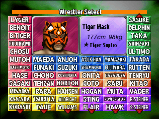
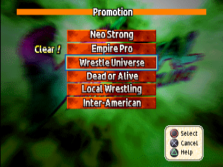
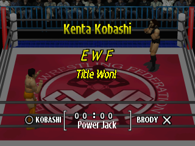

Secret Wrestlers
The game has 60 wrestlers, but the select screen shows only 52 when you start. The other eight are legends from earlier eras, and you earn them by winning the Official Match challenge: one for each of the six promotions, and two more for the seventh challenge that opens once a single wrestler has beaten all six. They are among the strongest wrestlers in the game.
Unlocked wrestlers are kept in your progress, so save to a Memory Card (Options > Save) before you switch the console off.
The Eight and How to Get Them
Each wrestler's name opens his page in the Wrestler Database, with his stats and full move list.
| Wrestler | How to unlock | Where on the select screen |
|---|---|---|
| Antonio Inoki | Win the Official Match challenge against Neo Strong Wrestling (NSW) | Bottom row, 1st cell from the left |
| Bruiser Brody | Win the challenge against Empire Pro Wrestling (EWF) | Bottom row, 2nd cell |
| Karl Gotch | Win the challenge against Wrestle Universe (WOU) | Bottom row, 3rd cell |
| Terry Funk | Win the challenge against Dead or Alive (DAW) | Bottom row, 4th cell |
| Mil Mascaras | Win the challenge against Local Wrestling (ILW) | Bottom row, 5th cell |
| Dynamite Kid | Win the challenge against Inter-American (IAWA) | Bottom row, 6th cell (far right) |
| Tiger Mask | With a junior heavyweight who has won all six challenges, win the seventh: SUPER Jr. | Top row, far left (above Jyushin Thunder Lyger) |
| Andre the Giant | With a heavyweight who has won all six challenges, win the seventh: SUPER HEAVY | Top row, far right (above The Great Sasuke) |
The six promotion wrestlers unlock in whatever order you clear the promotions, each the moment you win that promotion's last bout. Tiger Mask and Andre the Giant always come last, since the seventh challenge needs all six promotions cleared first. To get both, clear everything twice: once with a junior heavyweight and once with a heavyweight.
Where They Appear

Once unlocked, the secret wrestlers can be picked in Exhibition Match, Elimination Match, Tournament, League Match and Double Title Match, by either player. They never appear on the select screen of Official Match or Seven-Bout Blaze: those two modes always use the regular 52. See Modes for what each mode is.
The Official Match Challenge
Official Match is the one-player challenge, and the only way to earn the secret wrestlers. Pick one wrestler, then pick one of the six promotions to take on. Any promotion will do, even the one your wrestler belongs to.


Who You Face
A challenge is six bouts in a row. When you pick the promotion, the game draws five of its wrestlers at random for bouts 1 to 5, in random order. The draw is new each time you pick a promotion. A copy of your own wrestler can be among them. Bout 6 is always the same: the promotion's legend, the secret wrestler you earn by beating him. Who is in each promotion is listed under Promotions in the Wrestler Database.
| Challenge | Bouts 1 to 5 | Bout 6, the last |
|---|---|---|
| Neo Strong Wrestling (NSW) | 5 of its 13 wrestlers | Antonio Inoki |
| Empire Pro Wrestling (EWF) | 5 of its 9 wrestlers | Bruiser Brody |
| Wrestle Universe (WOU) | 5 of its 10 wrestlers | Karl Gotch |
| Dead or Alive (DAW) | 5 of its 6 wrestlers | Terry Funk |
| Local Wrestling (ILW) | All 5 of its wrestlers | Mil Mascaras |
| Inter-American (IAWA) | 5 of its 9 wrestlers | Dynamite Kid |
| SUPER HEAVY | 5 heavyweights from any promotion | Andre the Giant |
| SUPER Jr. | 5 junior heavyweights from any promotion | Tiger Mask |
- No break between wins. After each win the next bout loads straight away, with no menu.
- Rules. Every bout is one fall, in the promotion's own ring, whatever Mat Select says. The time limit is the one in Rule Settings.
- Losing. After a loss or a draw the game asks Continue?: Rematch to try again, or End to stop. Skipping a match from the pause menu counts as a draw.
- Winning. Win the last bout and the screen shows the promotion's tag over Title Won!. From then on the Promotion list marks that promotion Clear!, and its secret wrestler is yours.
The game's help text calls the goal of clearing all six "Six-Crown Champ".
SUPER Jr. and SUPER HEAVY
When one wrestler has cleared all six promotions, a seventh challenge joins the Promotion list. Which one you get depends on that wrestler's class: a junior heavyweight gets SUPER Jr. and earns Tiger Mask; a heavyweight gets SUPER HEAVY and earns Andre the Giant. Clearing the six with several different wrestlers does not count: it has to be the same one.
The junior heavyweights are Jyushin Thunder Lyger, Chris Benoit, Black Tiger, Yoshiaki Fujiwara, Masakatsu Funaki, Minoru Suzuki, Hayabusa, Sabu, The Great Sasuke, Super Delphin, TAKA Michinoku, Jinsei Shinzaki and Ultimo Dragon (plus the secret Dynamite Kid, Mil Mascaras and Tiger Mask, who can't enter Official Match). Everyone else is a heavyweight. The class is listed for every wrestler in the Wrestler Database.
Yoshiaki Fujiwara, Masakatsu Funaki and Minoru Suzuki count as juniors despite their size, so they get the SUPER Jr. challenge and earn Tiger Mask.
Second Costumes
Every wrestler has a second costume. On the wrestler select screen, pick him with Start instead of Circle and he enters the ring in it. For some wrestlers the second costume is a new look altogether; for others it is the same gear in different colours.
Rings and Random Mats
The Mat Select option in Rule Settings (Options > Rule Settings) chooses the ring mat: one of the six promotions, or Random. Each promotion name gives that promotion's mat; most promotions have two designs, and the game picks one of the two each time.
Random picks from a bigger pool. Besides the promotions' own mats, it can give ten mats that no Mat Select setting offers, listed in the database as ASM01, ASM03, RND00 to RND02 and RND04 to RND08. Set Mat Select to Random if you want to see them all. The match music follows the ring, and these extra mats play the Neo Strong Wrestling theme.
Every mat, with how to get it and its music, is in the rings table of the Wrestler Database.
Cut and Unused Content
A few things are on the disc but never shown or played in the game.
- An earlier cut of the intro movie. The game plays the final intro, but the disc also holds an older edit. It has a shot the final cut dropped: a spinning ring whose mat carries the Asmik logo and the words "VIRTUAL PRO-WRESTLING", and a different sign in the arena. WCW vs. the World, the game's Western sibling, carries the same file.
- Two unused music tracks. CD audio tracks 8 (71 seconds) and 11 (11 seconds) are never played by the game. They are ordinary CD audio, so any player that plays the disc's audio tracks plays them.
- No cheat codes. The game has no button codes, passwords, sound test or debug menu. The only button combination is Select+Start, which resets the game.
Patch Extras
The English translation comes as four patches. Pick one:
| Patch | Wrestler names | Secret wrestlers |
|---|---|---|
| (English) (Real Names) | Real names | Earned in Official Match, as in the original |
| (English) (Parody Names) | The game's own parody names | Earned in Official Match, as in the original |
| (English) (Real Names) (All Wrestlers Unlocked) | Real names | All eight selectable from the start |
| (English) (Parody Names) (All Wrestlers Unlocked) | The game's own parody names | All eight selectable from the start |
All Wrestlers Unlocked
With an All Wrestlers Unlocked patch, all 60 wrestlers are on the select screen from the first boot, in the same modes and cells as when you earn them (Where They Appear). It doesn't write anything to your Memory Card save. Official Match and Seven-Bout Blaze still show the regular 52, and the SUPER Jr. and SUPER HEAVY challenges still open only by clearing all six promotions.
Real and Parody Names
The original game gives every wrestler a thinly disguised parody name (Antonio Inoki is "Strongest Toki", Andre the Giant is "Andy the Gigant"). The Real Names patches show the wrestlers' real names everywhere in the game; the Parody Names patches keep the game's own names, written in English. The names switch at the top of this page shows either set here, so the guide matches the patch you play.